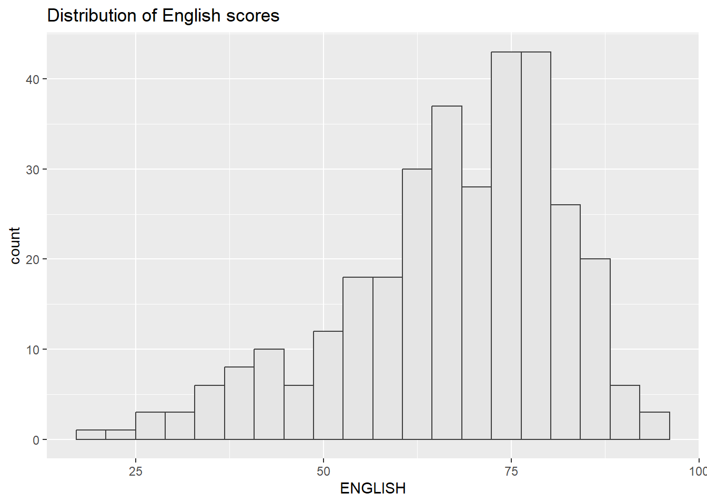
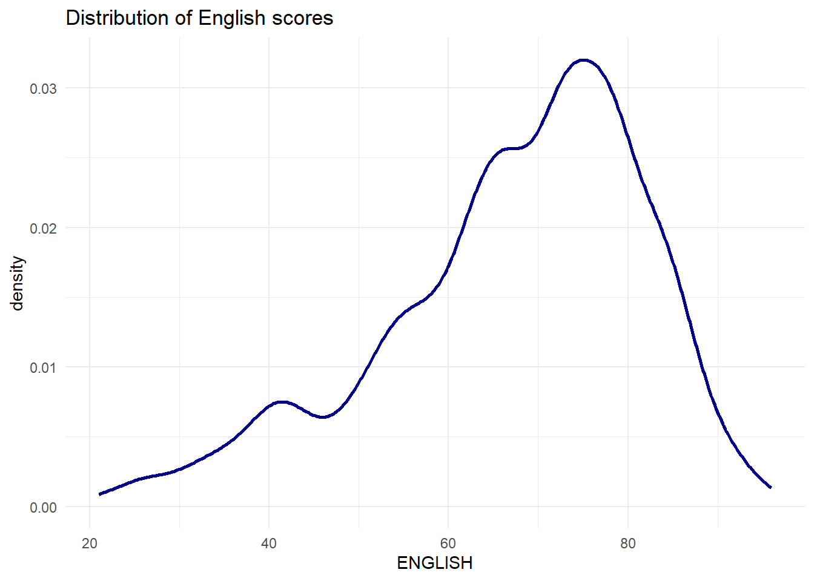
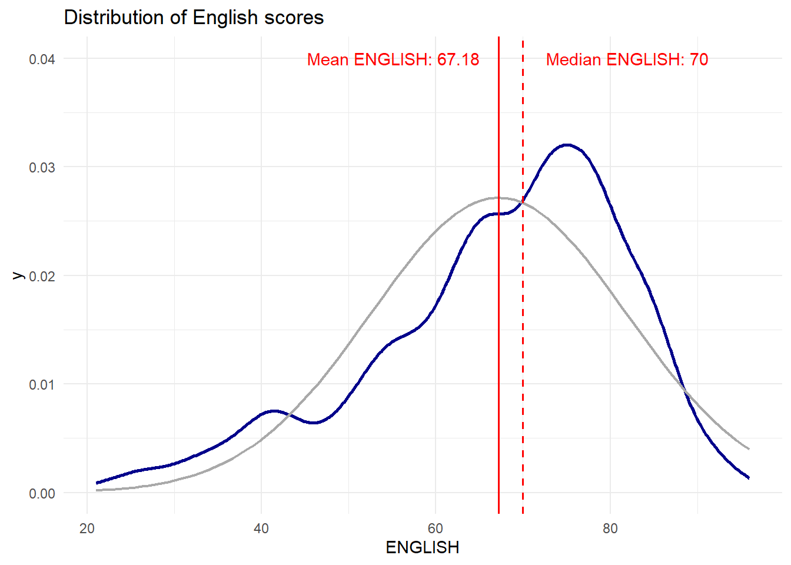

pacman::p_load(tidyverse, ggdist, ggthemes)In Class Ex 02
In Class Ex 2 - Data Visualisation
1.1 Loading the required packages
1.2 Loading Exam Data
exam_data <- read_csv("data/Exam_data.csv")Visualising Distribution
Typical way - Using Histogram
ggplot(data=exam_data,
aes(x = ENGLISH)) +
geom_histogram(bins=20,
boundary = 100,
color="grey25",
fill="grey90") +
theme_gray() +
ggtitle("Distribution of English scores") 
By using histogram - the underlying code will bin the data to create the histogram - because they are to be represented in bars.
Using Probability Density Plot Instead
ggplot(data=exam_data, aes(x = ENGLISH)) +
geom_density(color="darkblue", adjust =.65, alpha = .6, linewidth = 1) +
theme_minimal() +
ggtitle("Distribution of English scores") 
The alternative design
median_eng <- median(exam_data$ENGLISH)
mean_eng <- mean(exam_data$ENGLISH)
std_eng <- sd(exam_data$ENGLISH)
ggplot(data=exam_data, aes(x = ENGLISH)) +
geom_density(color="darkblue", adjust =.65, alpha = .6, linewidth = 1) +
stat_function(
fun = dnorm,
args = list(mean = mean_eng, sd = std_eng),
col ="darkgrey",
size = 0.8
) +
geom_vline (aes(xintercept = mean_eng), col = "red", linewidth = 0.6) +
annotate("text", x= mean_eng - 12, y=0.04, label= paste0("Mean ENGLISH: ", round((mean_eng),2)), color="red") +
annotate("text", x= median_eng + 12, y=0.04, label= paste0("Median ENGLISH: ", round((median_eng),2)), color="red") +
geom_vline (aes(xintercept = median_eng), col = "red", linewidth = 0.6, linetype = "dashed") +
theme_minimal() +
ggtitle("Distribution of English scores") 